Premium Bundle
Workflow Builder Bundle
Course + Notion OS for turning real workflows into SOPs, bounded AI support, QC checkpoints, and pilot-ready implementation assets.
Best for: founders, operators, consultants, and process buildersPractical Notion templates and digital tools for workflow building, client delivery, AI operations, compliance, documents, payment follow-up, event planning, and life admin recovery.
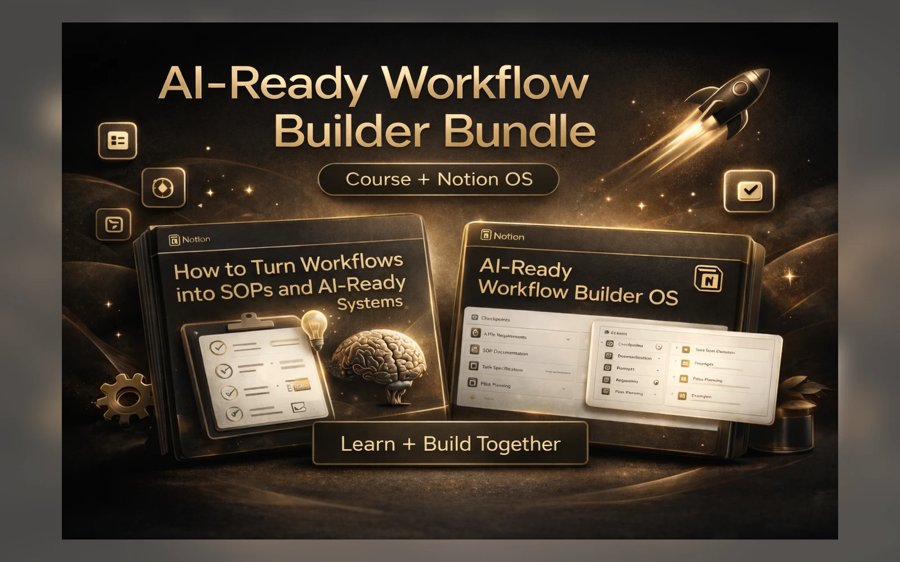
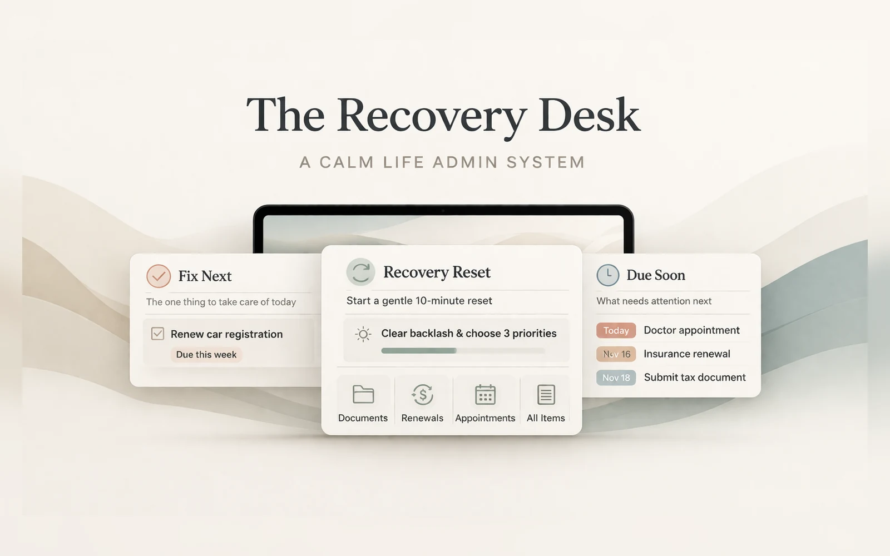

Start with the product that matches the bottleneck you are trying to clean up.
Start with the clearest offers: workflow building, client delivery, and life admin recovery.
Course + Notion OS for turning real workflows into SOPs, bounded AI support, QC checkpoints, and pilot-ready implementation assets.
Best for: founders, operators, consultants, and process builders
Run onboarding, project delivery, SOPs, reviews, and rollout from one clean Notion workspace.
Best for: freelancers, agencies, consultantsA calm life admin system for capturing messy tasks, seeing what needs attention, and taking the next clear step.
Best for: getting unstuck and reorganizedThe catalog is grouped by buyer problem so the store feels organized instead of overwhelming.
Course + Notion OS for turning workflows into SOPs, bounded AI support, QC checkpoints, and pilot-ready systems.
Best for: operators building serious systems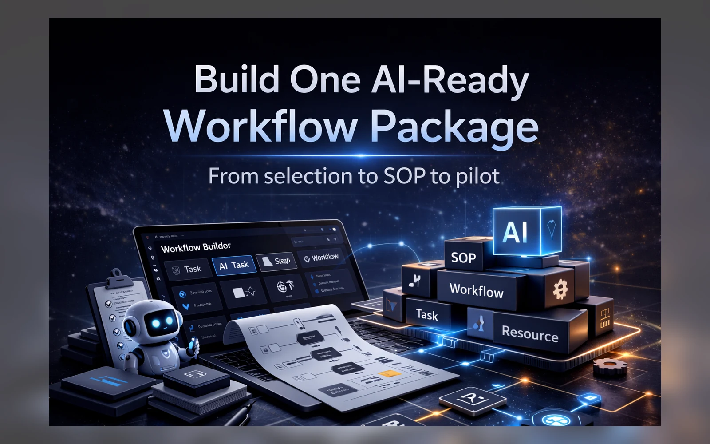
Build one documented, reviewable, AI-ready workflow package from selection to pilot.
Best for: turning process chaos into workflows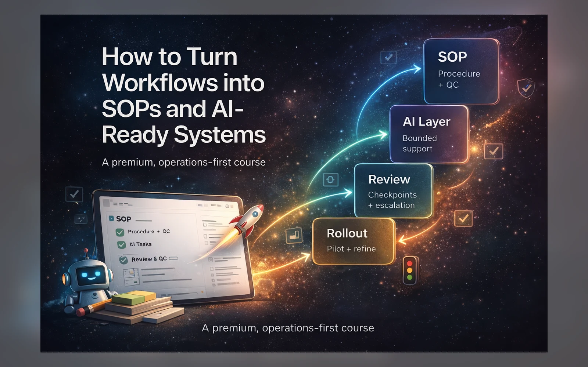
Learn how to turn workflows into SOPs, review checkpoints, and AI-ready implementation systems.
Best for: learning the method before building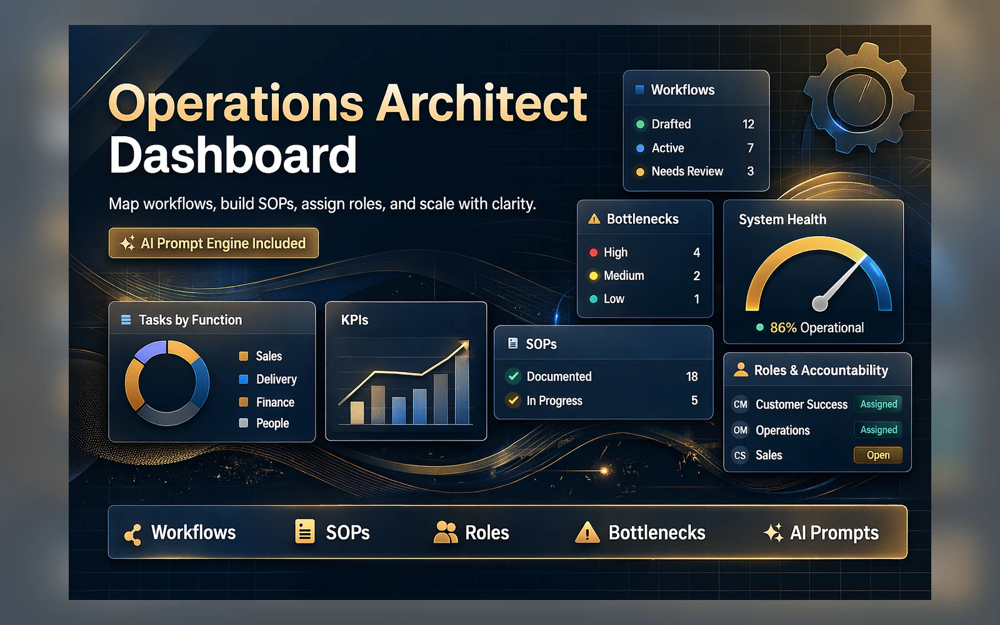
Turn messy business operations into workflows, SOPs, roles, bottleneck diagnostics, and AI-supported improvements.
Best for: AI operations and implementation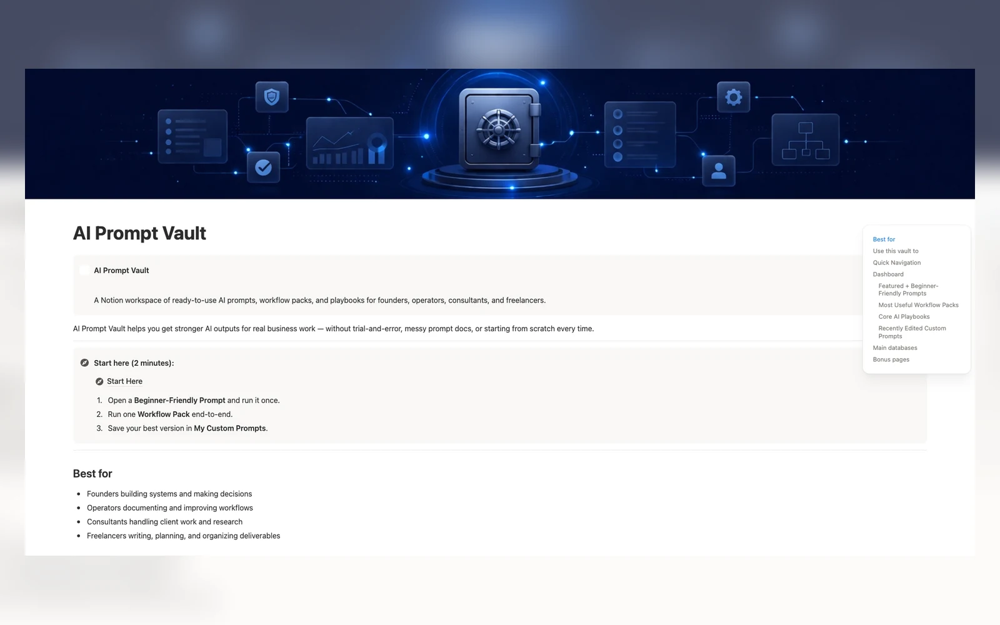
A structured vault for reusable prompts, workflow packs, prompt playbooks, and practical AI utility.
Best for: organizing reusable prompts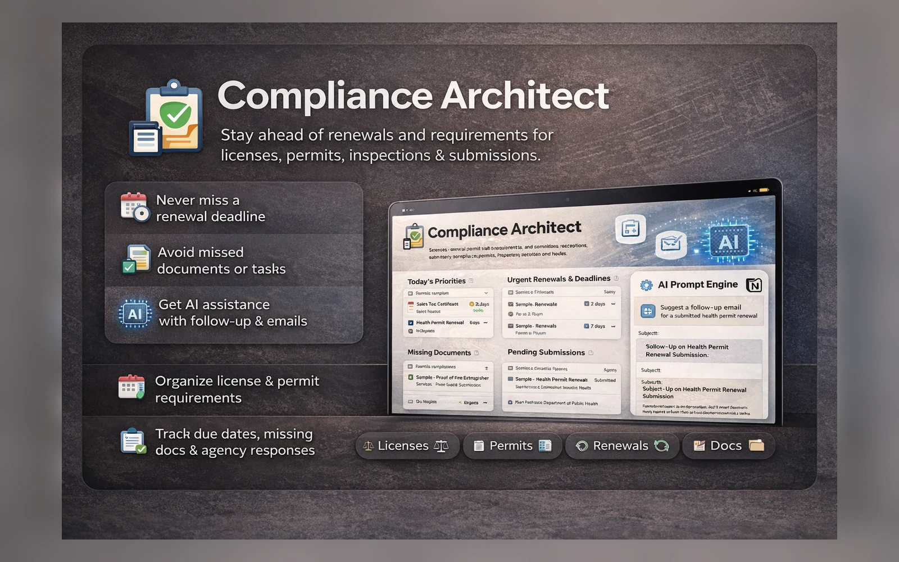
Track renewals, permits, inspections, missing documents, follow-ups, weekly reviews, and compliance deadlines.
Best for: compliance tracking and renewals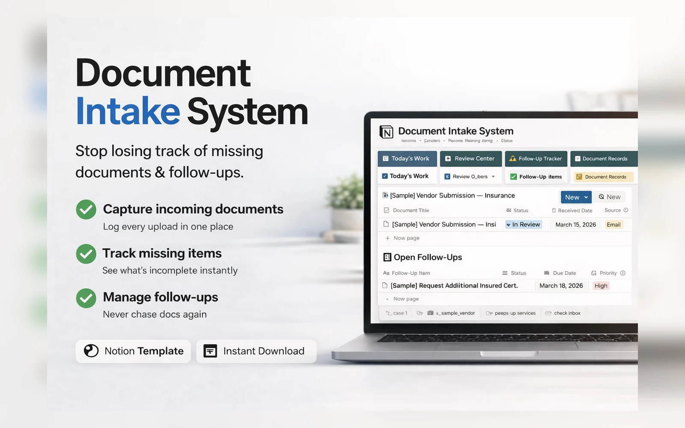
Collect incoming documents, review submissions, track missing items, and manage follow-ups to completion.
Best for: document-heavy admin workflowsManage client jobs, approvals, suppliers, materials, costs, payments, and production delivery in one connected workspace.
Best for: production teams, brand teams, campaign operatorsRun onboarding, project delivery, SOPs, reviews, and client rollout from one clean operating workspace.
Best for: freelancers, agencies, consultants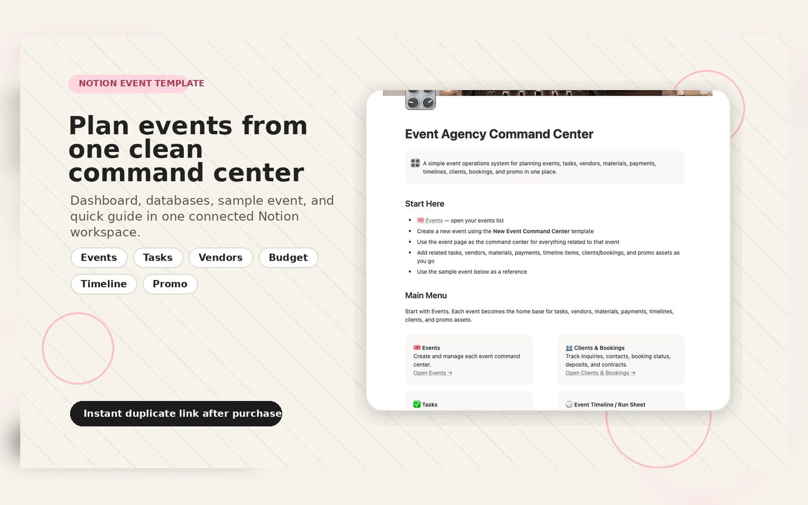
Plan events with tasks, vendors, budgets, timelines, bookings, promo assets, and coordination views.
Best for: event planners, organizers, agencies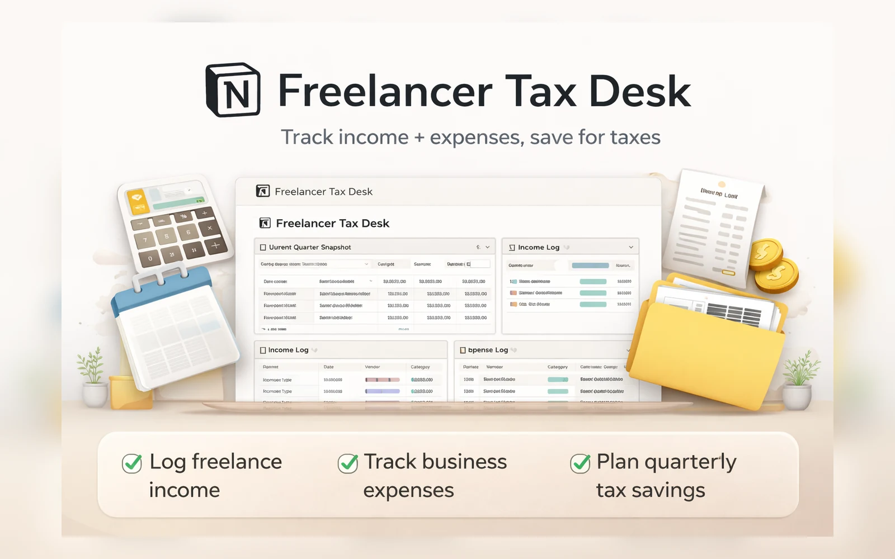
Track freelance income, business expenses, deductions, and quarterly tax savings in one practical desk.
Best for: freelancers and contractors
Track overdue invoices, draft polite reminder emails for review, and log each run without auto-sending.
Best for: late invoice follow-upA calm life admin system for capturing messy tasks, seeing what is due soon, and taking the next clear step.
Best for: getting unstuck and reorganized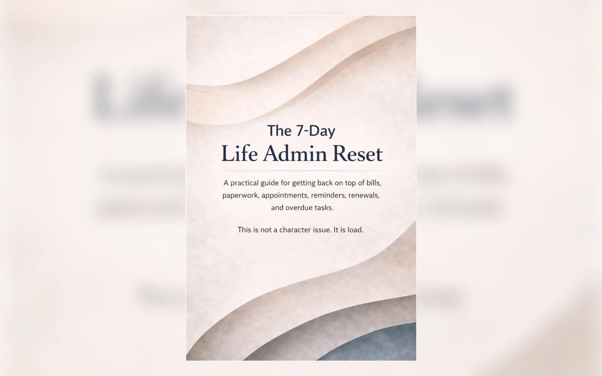
A practical guide for getting back on top of bills, paperwork, appointments, renewals, and overdue tasks.
Best for: a quick personal admin reset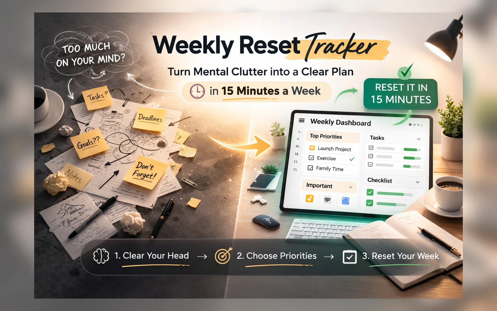
Clear your head, choose top priorities, track important items, and reset the week with a reusable Notion ritual.
Best for: weekly review and planningEvery product is positioned around a specific bottleneck: workflow building, client delivery, event planning, admin recovery, AI operations, compliance, documents, or payment follow-up.
The goal is to give buyers a system they can understand quickly, duplicate, and shape around real work instead of starting from a blank page.
Pick the product that matches your current bottleneck, then duplicate the system and start organizing the work in one place.
Quick answers before visitors click through to Gumroad.
No. These are independent templates and digital tools created by DeekeBiz.
Each product links to its Gumroad page. Some templates may also be listed on Notion Marketplace when approved.
Yes. Notion templates can be duplicated and adjusted to fit your workflow.
For AI-ready workflow systems, start with Workflow Builder Bundle or AI-Ready Workflow Builder OS. For service work, start with Client Delivery OS or Brand Activation Production OS. For personal admin, start with The Recovery Desk.